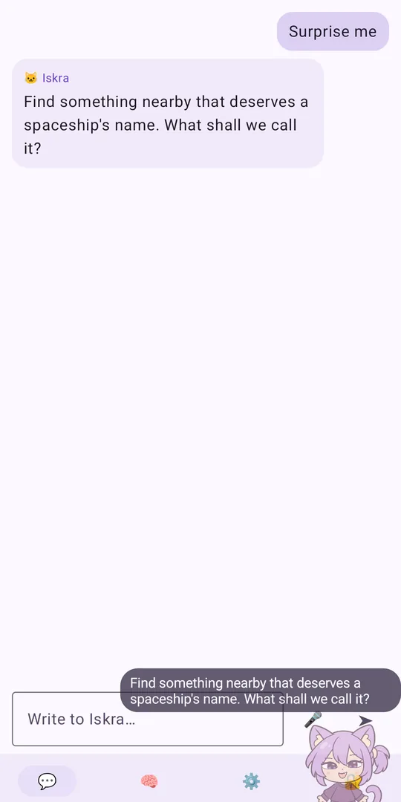
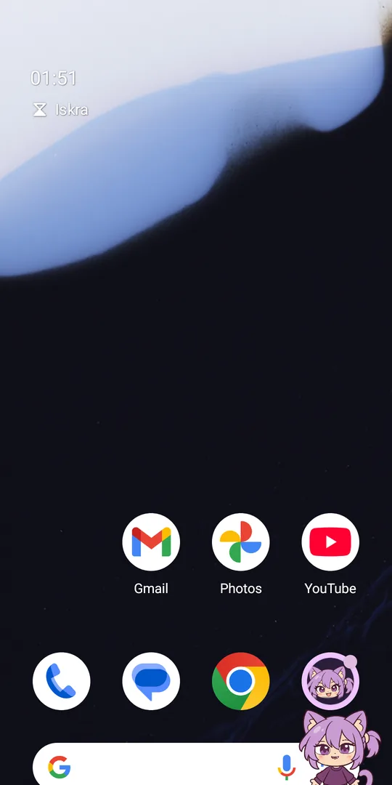
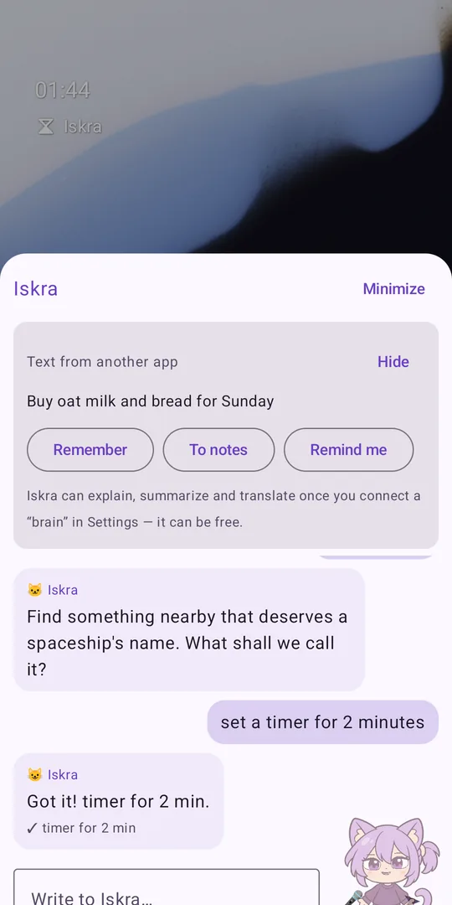
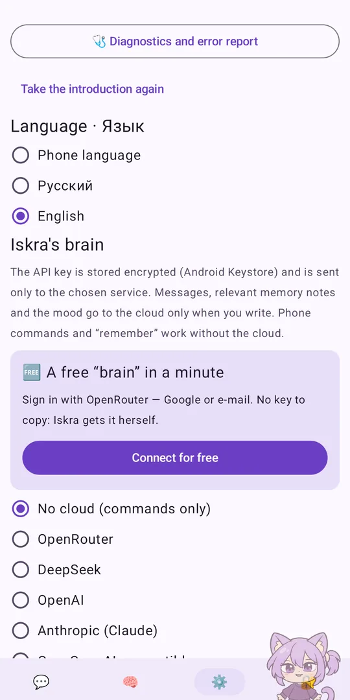

A cute cat-girl companion for Android: she sets alarms and reminders, keeps notes, tells the weather and chats with you — free, without ads or accounts, and your data stays on the phone.
📥 Download for AndroidSource codeAndroid 8–16 · English and Russian · free and open source (GPL-3.0)




Alarms, timers, reminders, notes, exact sums, units and dates, small talk, the flashlight, apps — just say or type it.
A free brain in one tap (OpenRouter), your own key, or a small model right on the phone that works with no internet at all.
Natural cloud voices or the system one. Say “Iskra” or “Spark” — recognized right on the phone.
Share text to Iskra or select it → “Ask Iskra”: explain, summarize, translate, note, remind.
Guides for Xiaomi, Samsung, Huawei, OPPO, vivo and more; TalkBack, large fonts, light and dark, tablets.
Memory, notes and the chat stay on the phone. Keys encrypted. No ads, no trackers, daily spending limits.
Yes. Commands, memory, notes, reminders and weather cost nothing. The free OpenRouter brain gives about 50 messages a day; paid services cost fractions of a cent per reply, with daily limits you set.
The code is open, every build is made by GitHub Actions from the public repository, and the APK is signed with the project's own key. A .sha256 checksum is published next to it.
Only what a feature you use needs: your message for the AI model you chose, the reply text for a cloud voice, the city for the weather. Full table: privacy policy.
No — Iskra is an AI program, and she says so if you ask.